이 시집에는 이재선 목사가 2011년부터 2014년까지 기도원과 수양관, 바닷가와 산책길에서 하나님을 찬양하며 적은 시 16편을 담았습니다.
인도 시인 타고르가 하나님을 찬양하며 『기탄잘리』를 지었다는 데 도전을 받아, 지은이도 자기 몸과 마음과 눈앞의 풍경 속에서 만난 하나님을 같은 마음으로 노래했습니다. 지은이는 타고르의 시를 두고 하나님을 찬양하는 시가 아주 평범하면서도 감동을 준다고 적은 적이 있습니다. 그 평범함처럼, 여기 담긴 시들도 모기 한 마리, 새벽종 소리, 아침 파도 소리처럼 날마다 만나는 것들에서 시작합니다.
시는 쓴 날짜 순서로 엮었고, 시마다 끝에 언제 어디서 썼는지를 적은 지은이의 메모를 그대로 두었습니다. 시마다 한 쪽씩, 정원과 꽃과 강과 바다와 아이들을 그린 피에르오귀스트 르누아르의 그림을 곁들였습니다.
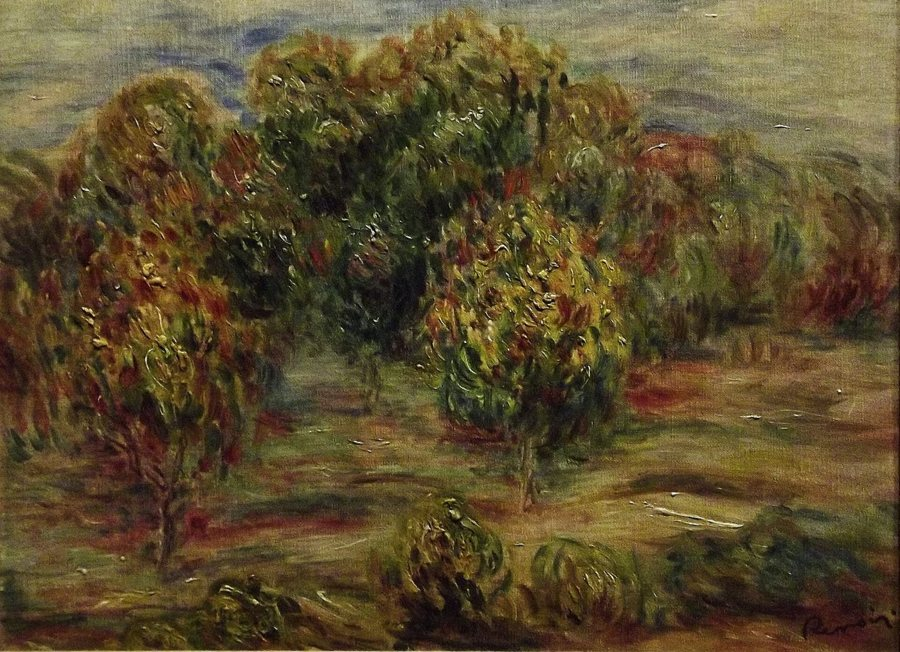
피에르오귀스트 르누아르, 「카뉴 풍경」 (1910년경)
모기
깊은 산 속에 나를 맡겼다. 고요와 적막이 영성인가 보다 깊은 산 속 깊은 영성 묵상이 절로 된다 자판이 내 손을 이끈다 무아지경 손놀림에 취해 있을 때 모기가 물었다 허벅지를 물었다. 따끔해 긁는 순간 손끝이 무뎌지고 결국 멈추고 말았다. 묵상도 영성도 이 놈의 못된 모기 박멸하리라 내 영성을 도적질한 도둑놈 모기 이 잡듯 찾아도 꼭꼭 숨어라 다시 마음 중심 잡아 영적으로 되려 애쓰는 순간 적막 속에 혼자인 나에게 친구로 보내준 모기 한 마리 이것이 영성인가?
2011년 6월 15일(수)
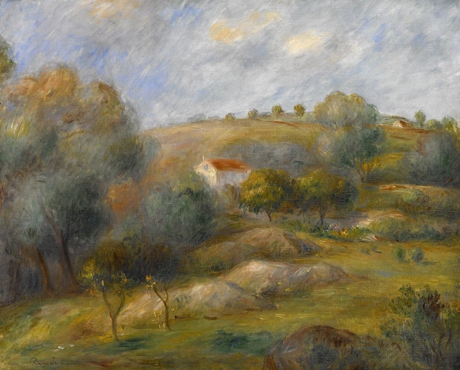
피에르오귀스트 르누아르, 「에수아의 봄」 (1900년경)
생명의 빛
빛 강렬히 비취니 구름이 막지 못하네
복음의 빛 능력이 되어 임하니 먹구름 세상 감당치 못하네
나 생명의 빛 어둠 속 영혼 절망 속 인생 모두 살려내는 태양 되리라
2011년 6월 15일(수)
필그림 하우스에서 산책 나왔다가 구름 속 태양을 보며 적어보았다.
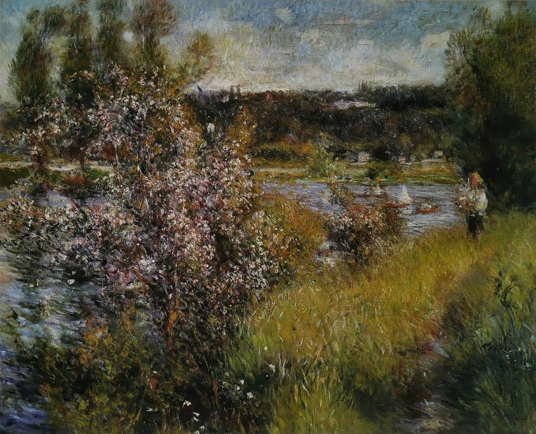
피에르오귀스트 르누아르, 「샤투의 센 강」 (1881)
검룡소
검룡소! 태백의 정기 밝은 물 머금어 하루 이 천 톤의 생수를 뿜어 민족의 젖줄 한강의 기적 일구어 내네
이재선! 삼위일체 하나님의 은혜 머금어 매일 말씀의 생수 매달 기도의 능력 매년 축복의 선물 평생 기적의 권능 민족에게 내리 부어 구원의 젖줄 생명의 기적 이루어내리
2011년 6월 17일(금)
태백 유승표목사님 교회에 안식월을 보내러 갔다가 한강의 발원지 검룡소에 갔다가 적어 보았다.
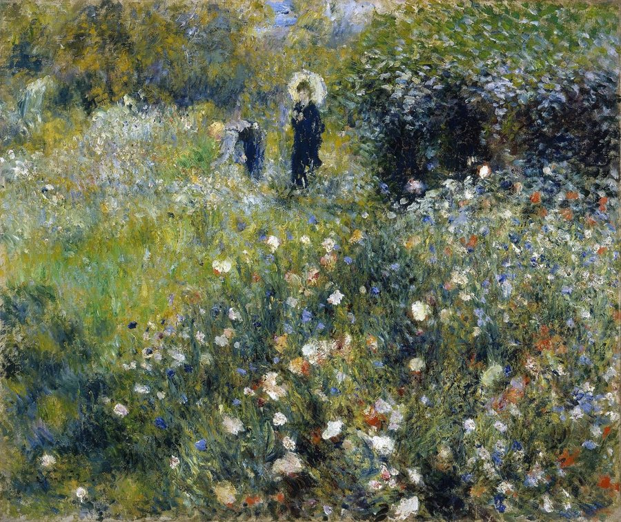
피에르오귀스트 르누아르, 「정원의 양산 쓴 여인」 (1875)
할렐루야! 권사님
어느 여 성도님의 껍 씹는 소리가 거스린다 얼토당토 않는 소리 친구 흉보는 소리 정치인 흉보는 소리 자식 못났다는 소리 못하겠다는 소리 안 된다는 소리 성도가 껍 씹는 소리는 거슬린다
광은 기도원 권사님의 “할렐루야!” 이 소리는 정겹다 미담 뉴스 소리 신지애 우승했다는 소리 성도 칭찬하는 소리 목사님 자랑하는 소리 자식 변화되었다는 소리 믿음의 승리의 소식 이 소리들은 듣기 좋~~~~~다
2011년 6월 23일(목)
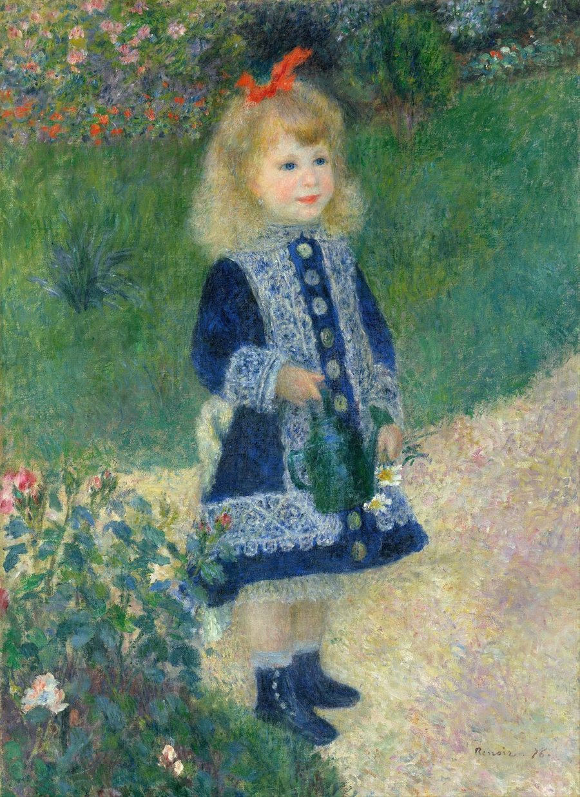
피에르오귀스트 르누아르, 「물뿌리개를 든 소녀」 (1876)
한 영혼
한 가지 일 끝까지 하지 않으면 어찌 이루리
한 영혼 끝까지 사랑하지 않으면 어찌 구원하리
한 영혼까지 사랑하지 않으면 어찌 인류를 구원하리
2011년 9월 17일(토)
2011년 9월 18일(토) 집 앞을 산책하며 아파트 경비 아저씨가 부슬비를 맞으며 주민들을 안내하는 모습을 보며 저 영혼도 구원해야 한다는 생각을 하면서 썼다.
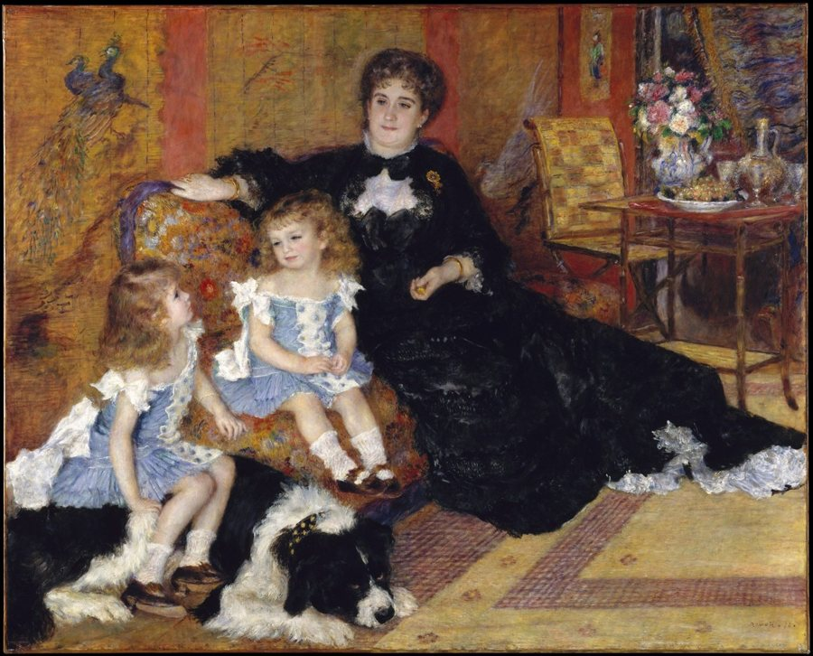
피에르오귀스트 르누아르, 「샤르팡티에 부인과 아이들」 (1878)
보혈 가족
예수님이 낳으신 보혈 가족 보기만 하여도 울컥 생각만 하여도 입가 웃음 셀 가족 애기 안으면 가슴에 사랑의 전율 어찌 사랑스러운가? 왜 그리 좋은가? 보혈이 흐르네 십자가 고리로 맺은 가족 성령님의 기름 부으심이 우릴 두르네 맛 난거 보면 온통 보혈 가족 생각 좋은 거 생기니 나눔의 손 기쁜 일 있으니 예수 가족에게로 지상의 지존 가족 천상의 영생 가족 우리는 보혈 가족
2012년 1월 14일(토) 치유수양회
2012년 1월 14일(토) 동산교회수지수양관에서 치유수양회 중 만삭인 김은정B집사님이 김한결성도님의 아이를 얼르며 이뻐하는 모습을 보면서 예수님이 맺어주신 가족이 그렇게 아름다움을 보면서 써 보았다.
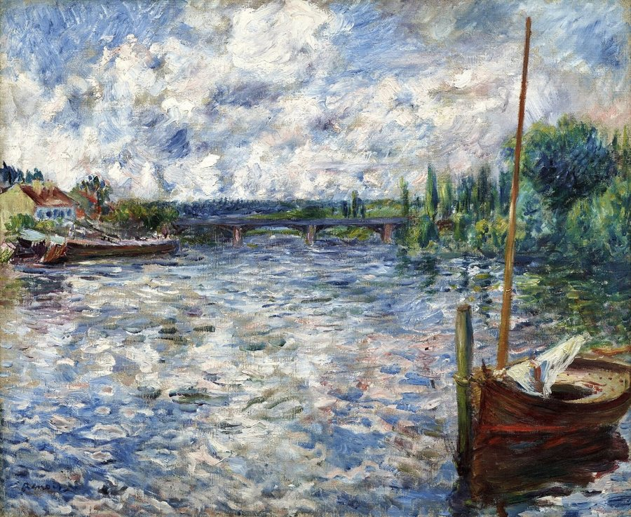
피에르오귀스트 르누아르, 「샤투의 센 강」 (1874)
흐르게 하소서!
피를 빠는 거머리처럼 나를 파는 분노 강력 접착제처럼 한 번 붙으면 떼어지지 않는 낙담 고무풀처럼 긁어도 긁어도 사라지지 않는 근심, 걱정, 불안, 불행의 삼종세트 거친 수세미 문질러도 지워지지 않는 혐오스런 저주의 문신 아! 피곤합니다! 아! 놓고 싶습니다! 아! 나는 안 되나 봅니다!
인생의 무덤에서 주님 만났네 우리 주님의 보혈을 마셨네 나의 영샘에 성령의 기름 흐르네 거머리 같은 분노 내 입술에 붙을 수 없네 오공 본드 같은 낙담 내 가슴 누르지 못 하네 고무풀 같은 불행 삼종세트 내 인생 열차에 타지 못 하리 이제 죄악의 세상 물속을 자유유영 아름다운 세상 무중력의 공중부양 자유! 평안! 행복!
2012년 1월 14일(토)
2012년 1월 14일(토) 동산교회 수양관에서 치유수양회 중 성도들이 은혜 받는 모습을 보면서 써보았다.
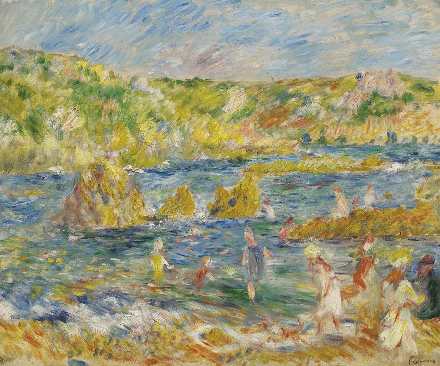
피에르오귀스트 르누아르, 「건지 섬의 바위와 사람들」 (1883)
아침 파도
아침 파도소리 잠을 깨우나 싶더니 마음을 일으키고 영혼을 흔들고 사명을 밝히네 바다, 바람, 빛의 오케스트라 한 번도 같지 않은 물의 춤사위 에스겔 뼈들에 불어 넣은 생기 칠흑의 어둠 밝히는 빛 우겨쌈의 막힌 문을 연다 신이 그린 생화(生畵) 가슴에 밀려드는 생의 에너지 가화(佳畵)로 신과의 만남 주님이 먹여주신 생명 양식 가슴 고동치는 생명 폭포 내 잠든 영혼을 흔드는 아침 파도
2012년 1월 30일(월)
2012년 1월 30일(월) 안면도 리솜리조트에서 에스라겨울수련회에서 바다 파도소리를 들으며 잠이 깨어 적어본다.
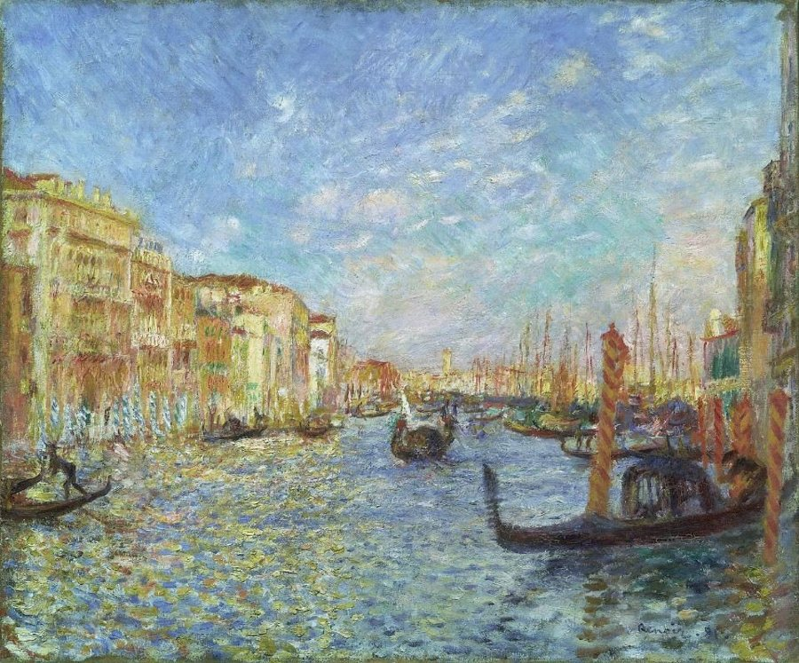
피에르오귀스트 르누아르, 「베네치아 대운하」 (1881)
빠알간 십자가
(히 12:4) 너희가 죄와 싸우되 아직 피흘리기까지는 대항하지 아니하고
땅거미 두리우는 어둘녁 빠알간 십자가가 눈에 온다 빨개서 더 아름답다 왜 십자가는 빨갈까 예수님이 피를 흘려 묻혔기 때문일게다
십자가는 한 밤에 더 붉다 빨개야 아름다운 십자가이다 검은 십자가는 어둡다 흰 십자가는 허하다 빠알간 십자가가 잘 어울린다
왜? 요즘은 십자가가 색깔이 바뀔까 교회가 밝힐 힘이 없어 검어진 것일까? 잘된다고 신기루만 뿜어내서 그럴까 피를 토하는 기도가 없어서일까 손발에 못 박히지 않아서 일까
우리의 피 흘리기 까지 죄와 싸움으로 십자가를 빠알게 물들이자
2013년 2월 13일(수) 광은기도원의 저녁 십자가를 보며 적어 보았다.
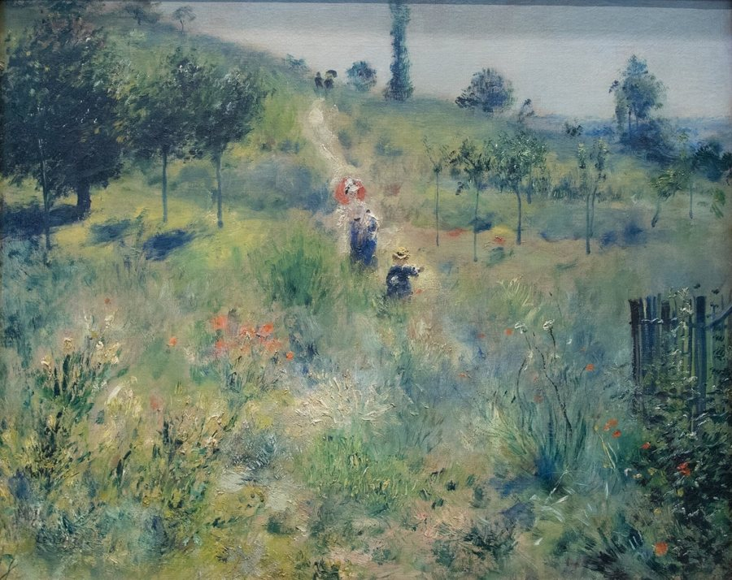
피에르오귀스트 르누아르, 「풀숲 사이로 오르는 길」 (1873)
종치기
온 대지가 깊은 잠에 가쳐 있을 때 누구도 흔적 남기지 못한 함박눈 쌓인 곳 칠흑 어둠 겨우 개어 빛 드리우는 길 아무도 마시지 못한 새벽 청정산소 마시며 천지를 깨우러 나서는 발걸음 그의 보폭 마다 비장함을 넘어 아름다움 땡!~ 땡!~ 땡!~ 새벽 종치기의 손놀림에 세상이 지기개를 켠다
새벽종 일그러지고 뭉개지고 종소리 떠나가고 울려야 할 시점을 도둑맞고 어둔 침묵만 날 띄고 있다
종치기는 깊은 수면 해 속에 침전물 된지 오래고 새벽종이 있었는지 종치기의 존재 여부까지도 아득한 옛 이야기 깊은 삼림 속으로 포악한 도끼가 종을 깨 부숴뜨렸는지 종치기가 잠에 취해 세상이 어둠의 잠을 잤는지 아! 그리운 새벽종이여!
맘몬신 최면에 잠든 세인(世人)들 쾌락녀 붉은 입술에 현혹된 남정네들 포스트모던 바다에서 허우적 청춘 시지포스 인기 큰 바위 밀고 또 밀어 보다 지친 젊음 명예 해수 마시며 갈증에 재차 해수 마시는 중년 세상을 깨우러 오늘도 새벽 잠 벗긴다
마음의 종 땡! 사랑의 종 땡! 땡! 영혼의 종 땡! 땡! 땡! 분연히 일어나라 새벽 종치기들이여!
2013년 2월 20일(수) 광은기도원에서 새벽 종치는 소리에 깨어 새벽종소리가 나를 깨우듯 세상을 깨우는 종이 필요하고, 종치기가 필요하다는 생각에 적어 보았다.
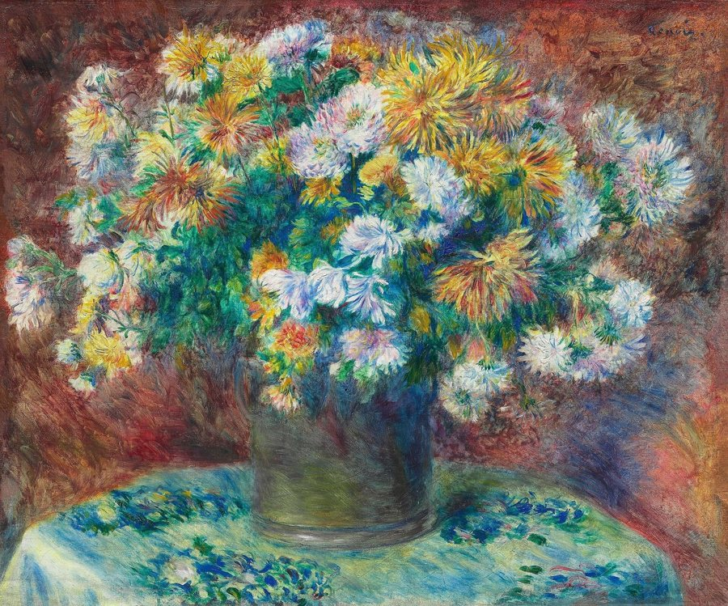
피에르오귀스트 르누아르, 「국화」 (1881–82)
'maid by GOD'
사람은 똑같이 만든다 집도, 옷도, 차도, 얼굴도 심지어 복제까지도 같은 모양 밖에는 만들지 못하니 능력이 거기까지
인간은 차이를 만든다 집은 저택과 판자 집 옷은 프라다와 길표 차는 리무진과 소형차 등급을 먹이고 계급을 만들고 차이를 만드는 얄구진 동물
신의 다르게 만듦 소나무도 적송, 조선솔, 외솔, 높이 솟은 놈, 옆으로 퍼진 놈, 꾸불꾸불한 놈 양도 희거나 얼룩이거나 나르거나 살진 놈 산은 에베레스트부터 뒷동산까지 하늘의 구름도 유구한 세월 한 번도 같은 구름 없었다 그 중 사람을 다르게 만드셨다
왜? 너는 특별하니까 넌 사랑스러우니까 넌 소중하니까
신의 손길 지음 받은 존귀한자 기계로 찍어낸 물건 아니니 그분 손수지은 'maid by GOD'
2013년 2월 21일(목) 광은기도원에서 적어 보았다.
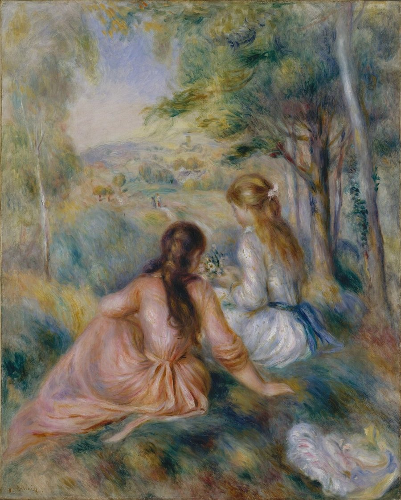
피에르오귀스트 르누아르, 「풀밭에서」 (1888–92)
어느 목사의 기도
주여! 나를 높여주옵소서! 나를 성공케 하옵소서! 나를 잘나게 하옵소서! 나를 알려지게 하옵소서! 나를 키워주옵소서! 나를 살려주옵소서!
가 아니라
주여! 나를 낮춰주옵소서! 나를 섬기게 하옵소서! 나를 약하게 하옵소서! 나를 숨겨 주옵소서! 나를 밀알이 되게 하옵소서! 나를 죽여주옵소서!
2013년 11월 14일(목) 광은기도원의 기도실에서 어느 목사님의 기도 소리를 들으며 적어 보았다.
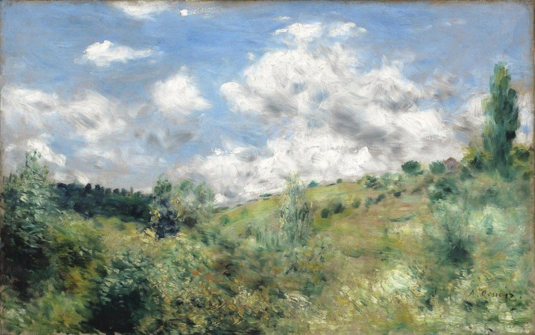
피에르오귀스트 르누아르, 「한 줄기 바람」 (1872)
하늘
하늘 향하여!
산도 나무도 풀도 바위의 이끼조차도 하늘을 향하여 갈망하네
새도 짐승도 곤충도 머리만큼은 하늘을 소망하네
세상 만물의 하늘 향한 솟구침 바램과 열망
너 사람아! 생겨먹길 하늘로 하늘로 치솟아 하늘로 치솟아 있거늘
2014년 1월 8일(수) 명성수양관에서 산, 나무, 모든 사물들이 하늘을 향하여 솟구쳐 있다는 생각에 오직 사람만이 왜 하늘을 향하지 않을까 생각해 보았다.
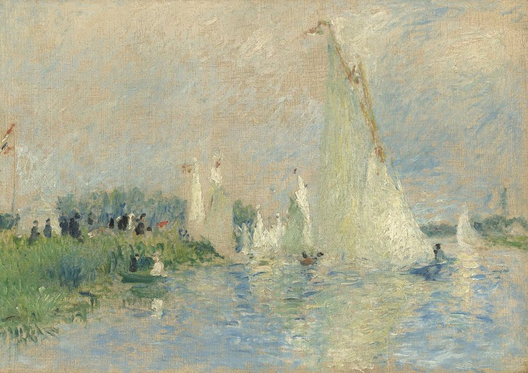
피에르오귀스트 르누아르, 「아르장퇴유의 요트 경기」 (1874)
십자가
십자가 무겁고 중한 짓누르는 십자가 못 본체 외면하였습니다
메고 갈 수도 벗어 던질 수도 매달릴 수도 없어 옆에 세워두고 돌아갔습니다
주님 만나니 십자가 내 것 되고 져야만 하는 사랑스런 십자가 등에 철썩 붙었습니다
몸에 딱 붙고 무겁지 않고 거치지 않고 솜털 같았습니다
내가 십자가를 멘 줄 알았더니 십자가가 나를 얹었습니다 내가 십자가를 지고 가는 줄 알았더니 십자가가 나를 업고갑니다
십자가와 하나 되고 몸이 가벼워지고 육중한 몸 덩이가 떠 올랐습니다
새가 되어 하늘로 솟아오르고 영롱한 세상 펼쳐지니 십자가는 짐이 아니라 창공을 나는 날개였습니다
2014년 1월 11일(토) 동산교회 수지수양관 치유수양회 중 십자가 동영상을 보는 중 내 등에 십자가가 메어지는 느낌을 받았지만 무겁지 않고 날개 같은 느낌을 받아서 지었다.
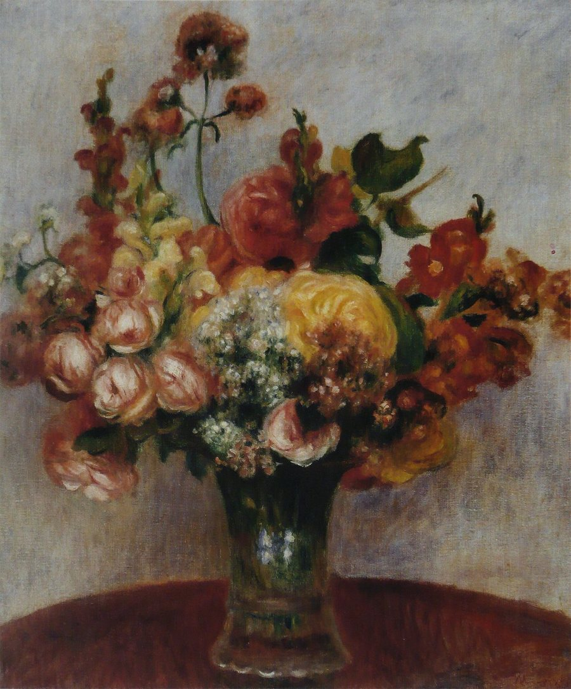
피에르오귀스트 르누아르, 「꽃병의 꽃」 (1898)
생명의 모체
떠오르는 태양, 불덩어리 눈에 넣어주시고 수 억경 에너지 몸에 채워 주시는 용광로 수 만개 넣어 타지 않게 하시는 주여!
생명의 기운 오장육부 휘몰아쳐 오늘도 새 건전지로 갈아 끼워 힘차게 고동치는 심장의 펌프질 온 몸 돌아 사지 끝에 이르게 하시는 하나님!
안테나 머리 영혼의 스파크 플러그 다리 삶의 열정 가득 채워진 창조주의 기운 보여짐 묻어남 만져짐이여 북받쳐 오르는 생명의 기운이신 야훼!
걸어 다니는 기적 덩어리 굴러다니는 창조의 결정체 흘러나오는 감사의 소리체 뿜어 나오는 찬양의 분수되어 생명의 모체를 영원히 기뻐하리!
2014년 1월 22일(수) 광은기도원에서 타고르가 하나님을 찬양하는 기탄잘리를 지었음을 생각하며 내 몸 속에 흐르는 하나님의 기운을 찬양하며 적어 보았다.
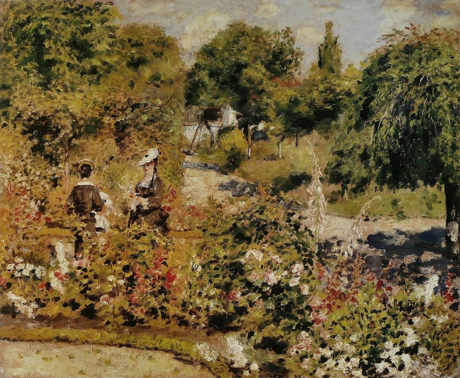
피에르오귀스트 르누아르, 「퐁트네의 정원」
백조
내 영혼이 떨려 불면의 밤 어지러울 때 그분의 말씀 입술로 대뇌었더니 그 순간,
쏜살같이 달려와 평안의 이불 덮어주심
내 앞길의 흑암에 불안하여 두려움에 눌릴 때 주님! 이름 부르며 간구하였더니 그 찰라,
길이 보이고 열리고 인도해 주시는 주님
내 삶의 필요에 간절함의 목마름 타들어가는 심령 말씀을 뿌리 삼아 믿음으로 선포하니 그 정점,
내 눈에 보였고 손에 쥐였고 맘에 기쁨이 되어주신 주님
내 맘 낙심의 영 큰 파도 덮어 압박으로 갑갑하여 짓눌릴 그 순간
“내 영혼아 네가 어찌하여 낙심하며 어찌하여 내 속에서 불안해 하는가 너는 하나님께 소망을 두라 그가 나타나 도우심으로 말미암아 내가 여전히 찬송하리로다(시42:5)”
예수님 부르며 ‘ 무시기도(無時祈禱)’모드로 들어가니 그 시각,
어둠의 영은 분화(分火)되고 거울 같은 호수의 한 마리 백조
2014년 2월 9일(주일) 필그림하우스에서 주일 아침 예배 전 큐티하고 나서 지난 아내와 여정을 생각하고, 전 날 밤 인도해주신 주님을 기억하며 찬양시를 지었다.